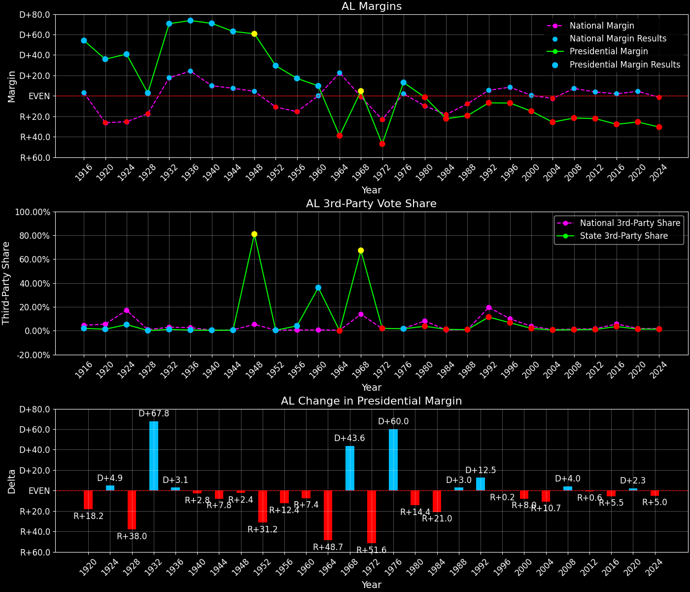
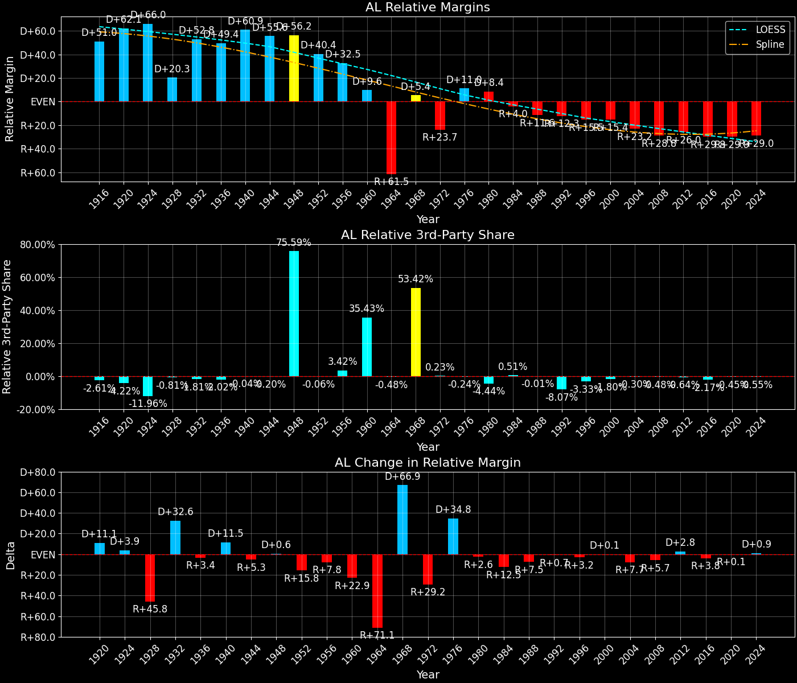

Alabama (AL) — Statewide
Alabama (AL) — Statewide

Margins · 3rd-Party share · Pres. deltas

Relative margins · Relative 3rd-Party · Rel. deltas
Alabama (AL) — Total Data
| Year | D | R | State Margin | Nat. Margin | Rel. Margin | Total votes | EVs |
|---|---|---|---|---|---|---|---|
| 1916 | 99,409(76.0%) | 28,662(21.9%) | D+54.1 | D+3.1 | D+51.0 | 130,728 | 12 |
| 1920 | 159,965(67.3%)(Δ 60,556) | 74,556(31.4%)(Δ 45,894) | D+35.9(Δ R+18.2) | R+26.2(Δ R+29.3) | D+62.1(Δ D+11.1) | 237,638(Δ 106,910) | 12 |
| 1924 | 112,966(67.8%)(Δ -46,999) | 45,005(27.0%)(Δ -29,551) | D+40.8(Δ D+4.9) | R+25.2(Δ D+1.0) | D+66.0(Δ D+3.9) | 166,593(Δ -71,045) | 12 |
| 1928 | 127,797(51.3%)(Δ 14,831) | 120,725(48.5%)(Δ 75,720) | D+2.8(Δ R+38.0) | R+17.4(Δ D+7.8) | D+20.3(Δ R+45.8) | 248,982(Δ 82,389) | 12 |
| 1932 | 207,910(84.7%)(Δ 80,113) | 34,675(14.1%)(Δ -86,050) | D+70.6(Δ D+67.8) | D+17.8(Δ D+35.2) | D+52.8(Δ D+32.6) | 245,354(Δ -3,628) | 11 |
| 1936 | 238,136(86.5%)(Δ 30,226) | 35,358(12.8%)(Δ 683) | D+73.7(Δ D+3.1) | D+24.3(Δ D+6.5) | D+49.4(Δ R+3.4) | 275,244(Δ 29,890) | 11 |
| 1940 | 250,726(85.2%)(Δ 12,590) | 42,184(14.3%)(Δ 6,826) | D+70.9(Δ R+2.8) | D+10.0(Δ R+14.3) | D+60.9(Δ D+11.5) | 294,219(Δ 18,975) | 11 |
| 1944 | 198,918(81.3%)(Δ -51,808) | 44,540(18.2%)(Δ 2,356) | D+63.1(Δ R+7.8) | D+7.5(Δ R+2.5) | D+55.6(Δ R+5.3) | 244,743(Δ -49,476) | 11 |
| 1948 | 171,443(79.7%)(Δ -27,475) | 40,930(19.0%)(Δ -3,610) | T+60.7(Δ R+2.4) | D+4.5(Δ R+3.0) | D+56.2(Δ D+0.6) | 214,980(Δ -29,763) | 11 |
| 1952 | 275,075(64.6%)(Δ 103,632) | 149,231(35.0%)(Δ 108,301) | D+29.5(Δ R+31.2) | R+10.9(Δ R+15.3) | D+40.4(Δ R+15.8) | 426,120(Δ 211,140) | 11 |
| 1956 | 280,844(56.5%)(Δ 5,769) | 195,694(39.4%)(Δ 46,463) | D+17.1(Δ R+12.4) | R+15.4(Δ R+4.5) | D+32.5(Δ R+7.8) | 496,871(Δ 70,751) | 11 |
| 1960 | 324,050(36.8%)(Δ 43,206) | 237,981(27.0%)(Δ 42,287) | D+9.8(Δ R+7.4) | D+0.2(Δ D+15.6) | D+9.6(Δ R+22.9) | 880,334(Δ 383,463) | 11 |
| 1964 | 210,732(30.5%)(Δ -113,318) | 479,085(69.5%)(Δ 241,104) | R+38.9(Δ R+48.7) | D+22.6(Δ D+22.4) | R+61.5(Δ R+71.1) | 689,817(Δ -190,517) | 10 |
| 1968 | 196,579(18.7%)(Δ -14,153) | 146,923(14.0%)(Δ -332,162) | T+48.6(Δ D+43.6) | R+0.7(Δ R+23.3) | D+5.4(Δ D+66.9) | 1,049,917(Δ 360,100) | 10 |
| 1972 | 256,923(25.5%)(Δ 60,344) | 728,701(72.4%)(Δ 581,778) | R+46.9(Δ R+51.6) | R+23.1(Δ R+22.4) | R+23.7(Δ R+29.2) | 1,006,093(Δ -43,824) | 9 |
| 1976 | 659,170(55.7%)(Δ 402,247) | 504,070(42.6%)(Δ -224,631) | D+13.1(Δ D+60.0) | D+2.1(Δ D+25.2) | D+11.0(Δ D+34.8) | 1,182,850(Δ 176,757) | 9 |
| 1980 | 636,730(47.4%)(Δ -22,440) | 654,192(48.8%)(Δ 150,122) | R+1.3(Δ R+14.4) | R+9.7(Δ R+11.8) | D+8.4(Δ R+2.6) | 1,341,929(Δ 159,079) | 9 |
| 1984 | 551,899(38.3%)(Δ -84,831) | 872,849(60.5%)(Δ 218,657) | R+22.3(Δ R+21.0) | R+18.2(Δ R+8.5) | R+4.0(Δ R+12.5) | 1,441,713(Δ 99,784) | 9 |
| 1988 | 549,506(39.9%)(Δ -2,393) | 815,576(59.2%)(Δ -57,273) | R+19.3(Δ D+3.0) | R+7.7(Δ D+10.5) | R+11.6(Δ R+7.5) | 1,378,476(Δ -63,237) | 9 |
| 1992 | 690,080(40.9%)(Δ 140,574) | 804,283(47.6%)(Δ -11,293) | R+6.8(Δ D+12.5) | D+5.6(Δ D+13.3) | R+12.3(Δ R+0.7) | 1,688,060(Δ 309,584) | 9 |
| 1996 | 662,165(43.2%)(Δ -27,915) | 769,044(50.1%)(Δ -35,239) | R+7.0(Δ R+0.2) | D+8.5(Δ D+3.0) | R+15.5(Δ R+3.2) | 1,534,349(Δ -153,711) | 9 |
| 2000 | 692,611(41.6%)(Δ 30,446) | 941,173(56.5%)(Δ 172,129) | R+14.9(Δ R+8.0) | D+0.5(Δ R+8.0) | R+15.4(Δ D+0.1) | 1,666,272(Δ 131,923) | 9 |
| 2004 | 693,933(36.8%)(Δ 1,322) | 1,176,394(62.5%)(Δ 235,221) | R+25.6(Δ R+10.7) | R+2.5(Δ R+3.0) | R+23.2(Δ R+7.7) | 1,883,449(Δ 217,177) | 9 |
| 2008 | 813,479(38.7%)(Δ 119,546) | 1,266,546(60.3%)(Δ 90,152) | R+21.6(Δ D+4.0) | D+7.3(Δ D+9.7) | R+28.8(Δ R+5.7) | 2,099,819(Δ 216,370) | 9 |
| 2012 | 795,696(38.4%)(Δ -17,783) | 1,255,925(60.5%)(Δ -10,621) | R+22.2(Δ R+0.6) | D+3.9(Δ R+3.4) | R+26.0(Δ D+2.8) | 2,074,338(Δ -25,481) | 9 |
| 2016 | 729,547(34.4%)(Δ -66,149) | 1,318,255(62.1%)(Δ 62,330) | R+27.7(Δ R+5.5) | D+2.1(Δ R+1.8) | R+29.8(Δ R+3.8) | 2,123,372(Δ 49,034) | 9 |
| 2020 | 849,624(36.6%)(Δ 120,077) | 1,441,170(62.0%)(Δ 122,915) | R+25.5(Δ D+2.3) | D+4.5(Δ D+2.4) | R+29.9(Δ R+0.1) | 2,323,282(Δ 199,910) | 9 |
| 2024 | 772,412(34.1%)(Δ -77,212) | 1,462,616(64.6%)(Δ 21,446) | R+30.5(Δ R+5.0) | R+1.5(Δ R+5.9) | R+29.0(Δ D+0.9) | 2,265,090(Δ -58,192) | 9 |
Alabama (AL) — Third-Party Data
| Year | D | R | Other votes | State 3rd-Party Share | 3rd-Party Nat. Share | 3rd-Party Rel. Share |
|---|---|---|---|---|---|---|
| 1916 | 99,409(76.0%) | 28,662(21.9%) | 2,657(2.0%) | 2.03% | 4.64% | -2.61% |
| 1920 | 159,965(67.3%)(Δ 60,556) | 74,556(31.4%)(Δ 45,894) | 3,117(1.3%) | 1.31% | 5.53% | -4.22% |
| 1924 | 112,966(67.8%)(Δ -46,999) | 45,005(27.0%)(Δ -29,551) | 8,622(5.2%) | 5.18% | 17.14% | -11.96% |
| 1928 | 127,797(51.3%)(Δ 14,831) | 120,725(48.5%)(Δ 75,720) | 460(0.2%) | 0.18% | 0.99% | -0.81% |
| 1932 | 207,910(84.7%)(Δ 80,113) | 34,675(14.1%)(Δ -86,050) | 2,769(1.1%) | 1.13% | 2.94% | -1.81% |
| 1936 | 238,136(86.5%)(Δ 30,226) | 35,358(12.8%)(Δ 683) | 1,750(0.6%) | 0.64% | 2.66% | -2.02% |
| 1940 | 250,726(85.2%)(Δ 12,590) | 42,184(14.3%)(Δ 6,826) | 1,309(0.4%) | 0.44% | 0.48% | -0.04% |
| 1944 | 198,918(81.3%)(Δ -51,808) | 44,540(18.2%)(Δ 2,356) | 1,285(0.5%) | 0.53% | 0.72% | -0.20% |
| 1948 | 171,443(79.7%)(Δ -27,475) | 40,930(19.0%)(Δ -3,610) | 2,607(1.2%) | 80.96% | 5.38% | 75.59% |
| 1952 | 275,075(64.6%)(Δ 103,632) | 149,231(35.0%)(Δ 108,301) | 1,814(0.4%) | 0.43% | 0.49% | -0.06% |
| 1956 | 280,844(56.5%)(Δ 5,769) | 195,694(39.4%)(Δ 46,463) | 20,333(4.1%) | 4.09% | 0.67% | 3.42% |
| 1960 | 324,050(36.8%)(Δ 43,206) | 237,981(27.0%)(Δ 42,287) | 318,303(36.2%) | 36.16% | 0.73% | 35.43% |
| 1964 | 210,732(30.5%)(Δ -113,318) | 479,085(69.5%)(Δ 241,104) | 0(0.0%) | 0.00% | 0.48% | -0.48% |
| 1968 | 196,579(18.7%)(Δ -14,153) | 146,923(14.0%)(Δ -332,162) | 706,415(67.3%) | 67.28% | 13.86% | 53.42% |
| 1972 | 256,923(25.5%)(Δ 60,344) | 728,701(72.4%)(Δ 581,778) | 20,469(2.0%) | 2.03% | 1.80% | 0.23% |
| 1976 | 659,170(55.7%)(Δ 402,247) | 504,070(42.6%)(Δ -224,631) | 19,610(1.7%) | 1.66% | 1.90% | -0.24% |
| 1980 | 636,730(47.4%)(Δ -22,440) | 654,192(48.8%)(Δ 150,122) | 51,007(3.8%) | 3.80% | 8.24% | -4.44% |
| 1984 | 551,899(38.3%)(Δ -84,831) | 872,849(60.5%)(Δ 218,657) | 16,965(1.2%) | 1.18% | 0.67% | 0.51% |
| 1988 | 549,506(39.9%)(Δ -2,393) | 815,576(59.2%)(Δ -57,273) | 13,394(1.0%) | 0.97% | 0.98% | -0.01% |
| 1992 | 690,080(40.9%)(Δ 140,574) | 804,283(47.6%)(Δ -11,293) | 193,697(11.5%) | 11.47% | 19.55% | -8.07% |
| 1996 | 662,165(43.2%)(Δ -27,915) | 769,044(50.1%)(Δ -35,239) | 103,140(6.7%) | 6.72% | 10.05% | -3.33% |
| 2000 | 692,611(41.6%)(Δ 30,446) | 941,173(56.5%)(Δ 172,129) | 32,488(1.9%) | 1.95% | 3.75% | -1.80% |
| 2004 | 693,933(36.8%)(Δ 1,322) | 1,176,394(62.5%)(Δ 235,221) | 13,122(0.7%) | 0.70% | 1.00% | -0.30% |
| 2008 | 813,479(38.7%)(Δ 119,546) | 1,266,546(60.3%)(Δ 90,152) | 19,794(0.9%) | 0.94% | 1.42% | -0.48% |
| 2012 | 795,696(38.4%)(Δ -17,783) | 1,255,925(60.5%)(Δ -10,621) | 22,717(1.1%) | 1.10% | 1.73% | -0.64% |
| 2016 | 729,547(34.4%)(Δ -66,149) | 1,318,255(62.1%)(Δ 62,330) | 75,570(3.6%) | 3.56% | 5.73% | -2.17% |
| 2020 | 849,624(36.6%)(Δ 120,077) | 1,441,170(62.0%)(Δ 122,915) | 32,488(1.4%) | 1.40% | 1.84% | -0.45% |
| 2024 | 772,412(34.1%)(Δ -77,212) | 1,462,616(64.6%)(Δ 21,446) | 30,062(1.3%) | 1.33% | 1.88% | -0.55% |

Two-party margins · relative · deltas
Alabama (AL) — Two-Party Data
| Year | D | R | 2-Party Margin | 2-Party Nat. Margin | 2-Party Rel. Margin | EVs |
|---|---|---|---|---|---|---|
| 1916 | 99,409(77.6%) | 28,662(22.4%) | D+55.2 | D+3.3 | D+52.0 | 12 |
| 1920 | 159,965(68.2%)(Δ 60,556) | 74,556(31.8%)(Δ 45,894) | D+36.4(Δ R+18.8) | R+27.7(Δ R+31.0) | D+64.1(Δ D+12.2) | 12 |
| 1924 | 112,966(71.5%)(Δ -46,999) | 45,005(28.5%)(Δ -29,551) | D+43.0(Δ D+6.6) | R+30.4(Δ R+2.7) | D+73.5(Δ D+9.3) | 12 |
| 1928 | 127,797(51.4%)(Δ 14,831) | 120,725(48.6%)(Δ 75,720) | D+2.8(Δ R+40.2) | R+17.6(Δ D+12.8) | D+20.4(Δ R+53.0) | 12 |
| 1932 | 207,910(85.7%)(Δ 80,113) | 34,675(14.3%)(Δ -86,050) | D+71.4(Δ D+68.6) | D+18.3(Δ D+35.9) | D+53.1(Δ D+32.7) | 11 |
| 1936 | 238,136(87.1%)(Δ 30,226) | 35,358(12.9%)(Δ 683) | D+74.1(Δ D+2.7) | D+24.9(Δ D+6.6) | D+49.2(Δ R+3.9) | 11 |
| 1940 | 250,726(85.6%)(Δ 12,590) | 42,184(14.4%)(Δ 6,826) | D+71.2(Δ R+2.9) | D+10.0(Δ R+14.9) | D+61.2(Δ D+12.0) | 11 |
| 1944 | 198,918(81.7%)(Δ -51,808) | 44,540(18.3%)(Δ 2,356) | D+63.4(Δ R+7.8) | D+7.5(Δ R+2.5) | D+55.9(Δ R+5.3) | 11 |
| 1948 | 171,443(80.7%)(Δ -27,475) | 40,930(19.3%)(Δ -3,610) | D+61.5(Δ R+2.0) | D+4.7(Δ R+2.8) | D+56.7(Δ D+0.9) | 11 |
| 1952 | 275,075(64.8%)(Δ 103,632) | 149,231(35.2%)(Δ 108,301) | D+29.7(Δ R+31.8) | R+10.9(Δ R+15.6) | D+40.6(Δ R+16.2) | 11 |
| 1956 | 280,844(58.9%)(Δ 5,769) | 195,694(41.1%)(Δ 46,463) | D+17.9(Δ R+11.8) | R+15.5(Δ R+4.6) | D+33.4(Δ R+7.2) | 11 |
| 1960 | 324,050(57.7%)(Δ 43,206) | 237,981(42.3%)(Δ 42,287) | D+15.3(Δ R+2.6) | D+0.2(Δ D+15.7) | D+15.1(Δ R+18.2) | 11 |
| 1964 | 210,732(30.5%)(Δ -113,318) | 479,085(69.5%)(Δ 241,104) | R+38.9(Δ R+54.2) | D+22.7(Δ D+22.5) | R+61.6(Δ R+76.7) | 10 |
| 1968 | 196,579(57.2%)(Δ -14,153) | 146,923(42.8%)(Δ -332,162) | D+14.5(Δ D+53.4) | R+0.8(Δ R+23.5) | D+15.3(Δ D+76.9) | 10 |
| 1972 | 256,923(26.1%)(Δ 60,344) | 728,701(73.9%)(Δ 581,778) | R+47.9(Δ R+62.3) | R+23.6(Δ R+22.8) | R+24.3(Δ R+39.6) | 9 |
| 1976 | 659,170(56.7%)(Δ 402,247) | 504,070(43.3%)(Δ -224,631) | D+13.3(Δ D+61.2) | D+2.1(Δ D+25.7) | D+11.2(Δ D+35.5) | 9 |
| 1980 | 636,730(49.3%)(Δ -22,440) | 654,192(50.7%)(Δ 150,122) | R+1.4(Δ R+14.7) | R+10.6(Δ R+12.7) | D+9.3(Δ R+2.0) | 9 |
| 1984 | 551,899(38.7%)(Δ -84,831) | 872,849(61.3%)(Δ 218,657) | R+22.5(Δ R+21.2) | R+18.3(Δ R+7.7) | R+4.2(Δ R+13.4) | 9 |
| 1988 | 549,506(40.3%)(Δ -2,393) | 815,576(59.7%)(Δ -57,273) | R+19.5(Δ D+3.0) | R+7.8(Δ D+10.5) | R+11.7(Δ R+7.5) | 9 |
| 1992 | 690,080(46.2%)(Δ 140,574) | 804,283(53.8%)(Δ -11,293) | R+7.6(Δ D+11.8) | D+6.9(Δ D+14.7) | R+14.6(Δ R+2.9) | 9 |
| 1996 | 662,165(46.3%)(Δ -27,915) | 769,044(53.7%)(Δ -35,239) | R+7.5(Δ D+0.2) | D+9.5(Δ D+2.6) | R+16.9(Δ R+2.4) | 9 |
| 2000 | 692,611(42.4%)(Δ 30,446) | 941,173(57.6%)(Δ 172,129) | R+15.2(Δ R+7.7) | D+0.5(Δ R+8.9) | R+15.7(Δ D+1.2) | 9 |
| 2004 | 693,933(37.1%)(Δ 1,322) | 1,176,394(62.9%)(Δ 235,221) | R+25.8(Δ R+10.6) | R+2.5(Δ R+3.0) | R+23.3(Δ R+7.6) | 9 |
| 2008 | 813,479(39.1%)(Δ 119,546) | 1,266,546(60.9%)(Δ 90,152) | R+21.8(Δ D+4.0) | D+7.4(Δ D+9.9) | R+29.2(Δ R+5.9) | 9 |
| 2012 | 795,696(38.8%)(Δ -17,783) | 1,255,925(61.2%)(Δ -10,621) | R+22.4(Δ R+0.7) | D+3.9(Δ R+3.4) | R+26.4(Δ D+2.8) | 9 |
| 2016 | 729,547(35.6%)(Δ -66,149) | 1,318,255(64.4%)(Δ 62,330) | R+28.7(Δ R+6.3) | D+2.2(Δ R+1.7) | R+31.0(Δ R+4.6) | 9 |
| 2020 | 849,624(37.1%)(Δ 120,077) | 1,441,170(62.9%)(Δ 122,915) | R+25.8(Δ D+2.9) | D+4.5(Δ D+2.3) | R+30.4(Δ D+0.6) | 9 |
| 2024 | 772,412(34.6%)(Δ -77,212) | 1,462,616(65.4%)(Δ 21,446) | R+30.9(Δ R+5.1) | R+1.5(Δ R+6.0) | R+29.4(Δ D+1.0) | 9 |